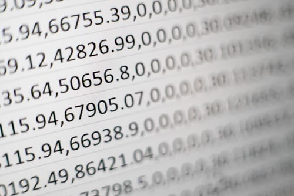

Python programming language is a popular programming language.It is famous and well-known because it is friendly and easy to learn
library
python has many library .They are pandas,pyttxs3,pyaudio,pygame,datatime,anaconda etc

Some IDE foe python
For code in python ,We have many IDEs .Popular IDEs are "Pycharm","Visual studio code","Jupitor notebook"
PYTHON
Python is an interpreted, high-level, general-purpose programming language. Created by Guido van Rossum and first released in 1991, Python's design philosophy emphasizes code readability with its notable use of significant whitespace. Its language constructs and object-oriented approach aim to help programmers write clear, logical code for small and large-scale projects.[28]
Python is dynamically typed and garbage-collected. It supports multiple programming paradigms, including structured (particularly, procedural), object-oriented, and functional programming. Python is often described as a "batteries included" language due to its comprehensive standard library.[29]
Python was conceived in the late 1980s as a successor to the ABC language. Python 2.0, released in 2000, introduced features like list comprehensions and a garbage collection system with reference counting.
Python 3.0, released in 2008, was a major revision of the language that is not completely backward-compatible, and much Python 2 code does not run unmodified on Python 3.
The Python 2 language was officially discontinued in 2020 (first planned for 2015), and "Python 2.7.18 is the last Python 2.7 release and therefore the last Python 2 release."[30] No more security patches or other improvements will be released for it.[31][32] With Python 2's end-of-life, only Python 3.5.x[33] and later are supported.
Python interpreters are available for many operating systems. A global community of programmers develops and maintains CPython, a free and open-source[34] reference implementation. A non-profit organization, the Python Software Foundation, manages and directs resources for Python and CPython development.
HISTORY
Python was conceived in the late 1980s[35] by Guido van Rossum at Centrum Wiskunde & Informatica (CWI) in the Netherlands as a successor to the ABC language (itself inspired by SETL),[36] capable of exception handling and interfacing with the Amoeba operating system.[8] Its implementation began in December 1989.[37] Van Rossum shouldered sole responsibility for the project, as the lead developer, until 12 July 2018, when he announced his "permanent vacation" from his responsibilities as Python's Benevolent Dictator For Life, a title the Python community bestowed upon him to reflect his long-term commitment as the project's chief decision-maker.[38] He now shares his leadership as a member of a five-person steering council.[39][40][41] In January 2019, active Python core developers elected Brett Cannon, Nick Coghlan, Barry Warsaw, Carol Willing and Van Rossum to a five-member "Steering Council" to lead the project.[42]
Python 2.0 was released on 16 October 2000 with many major new features, including a cycle-detecting garbage collector and support for Unicode.[43]
Python 3.0 was released on 3 December 2008. It was a major revision of the language that is not completely backward-compatible.[44] Many of its major features were backported to Python 2.6.x[45] and 2.7.x version series. Releases of Python 3 include the 2to3 utility, which automates (at least partially) the translation of Python 2 code to Python 3.[46]
Python 2.7's end-of-life date was initially set at 2015 then postponed to 2020 out of concern that a large body of existing code could not easily be forward-ported to Python 3
PYTHON
Founder of Python programming
First, solve the problem. Then, write the code.
John Johnson
How to learn python
You will laern python in many ways .If you want to learn it by reading you can go to w3school ,solo-learn.And If you want to learn it by watch video Haverd university have many course on it.In youtube go to Code with harry or Edureca